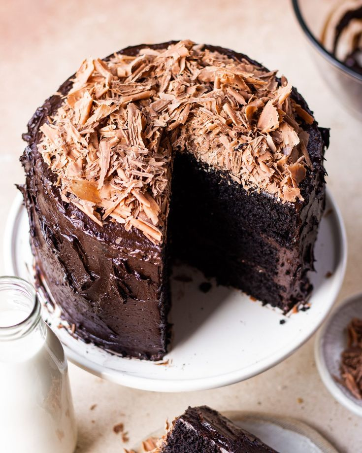

Cake

Description
A sweet, baked dessert made from flour, sugar, eggs, and other ingredients, often frosted or decorated.
Ingredients
- 2 cups all-purpose flour
- 1 ½ cups granulated sugar
- 1 cup unsalted butter, softened
- 4 large eggs
- 1 cup milk
- 2 tsp baking powder
- 1 tsp vanilla extract
- ½ tsp salt
Procedure
- Preheat Oven: Preheat your oven to 350°F (175°C). Grease and flour two 9-inch round cake pans.
- Mix Dry Ingredients: In a bowl, whisk together the flour, baking powder, and salt.
- Cream Butter and Sugar: In a large mixing bowl, beat the butter and sugar until light and fluffy.
- Add Eggs: Add eggs one at a time, beating well after each addition.
- Combine Wet and Dry: Gradually add the flour mixture to the butter mixture, alternating with milk, beginning and ending with the flour mixture. Mix until just combined.
- Add Vanilla: Stir in the vanilla extract.
- Bake: Divide the batter evenly between the prepared pans. Bake for 25-30 minutes, or until a toothpick inserted into the center comes out clean.
- Cool: Let the cakes cool in the pans for 10 minutes, then remove them from the pans and cool completely on a wire rack.
- Frost and Decorate: Once cooled, frost with your favorite frosting and decorate as desired.
HOME